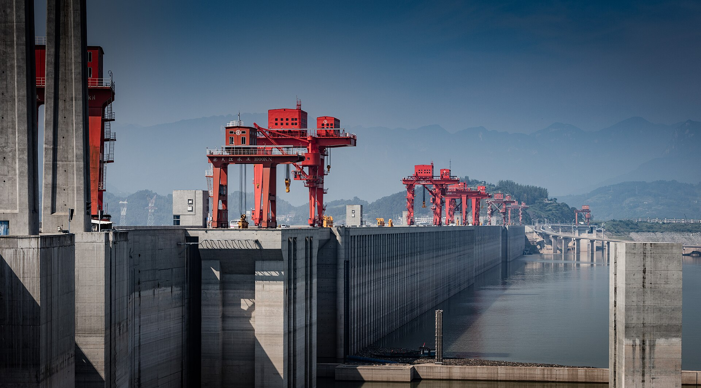

今天的行程
- 07:00出发，走三峡专用公路直奔坝区（约 50 分钟，通行证已办、车牌自动抬杆，入口有武警站岗）
- 08:00到三斗坪「三峡大坝游客换乘中心」，停车 → 换乘景区观光车（35 元/人，往返）
- 08:30–12:30三峡大坝约 4 小时：坛子岭（制高点，俯瞰大坝全景）→ 185 观景平台（与大坝坝顶同高，平视大坝）→ 截流纪念园（工程历史）
- 12:00午餐（换乘中心附近，或过桥到秭归县城吃）
- 12:30–14:00湖北三峡移民博物馆（免费 · 大家说的"水下博物馆"）：过西陵长江大桥到秭归县茅坪镇（距大坝仅 2 km，滨湖大道）。馆内「水下归州」展厅约 600 立方米、水深 4 米，用浮雕、灯光、声像微缩还原被江水淹没的归州古镇，实物 + 场景复原，很震撼。免费、不用预约（关注公众号生成当日二维码入馆）；周二开放 9:00–17:00（16:30 停止入馆）
- 14:00–15:30开车去三峡大瀑布（经市区往北，夷陵区黄花乡，约 1.5 h）
- 15:30–18:00三峡大瀑布（115 元/人，5A，约 2.5–3 小时）：核心玩法是穿瀑——从水帘后面走过去，全身会湿，必须带一套换的衣服；雨衣 + 防水鞋套景区有卖（10–20 元）
- 19:30回市区，陶珠路美食街晚餐（肥鱼火锅 / 烤鱼 / 卤虾）
坛子岭看过去就是这个画面——高峡出平湖

大坝船闸与红色门机（坝顶不开放，只能观景台看）
三峡大瀑布：穿瀑就是从这个水帘后面走过去
今天要用的信息
🎁 顺路别错过（全在今天这条线上）
- 屈原故里（5A · 80 元 · 2 h）：在秭归凤凰山，和三峡移民博物馆同一片区。它与大坝隔江相望、直线仅 600 米——是看三峡大坝全景最近、最好的位置（比坛子岭还近）。屈原祠 + 江渎庙等 24 处峡江文物（三峡蓄水时集中搬迁保护）都在这里；学生/60–69 岁 40 元，1.2 m 以下、70 岁以上免票
- 情人泉（3A · 35 元 · 1 h）：离大瀑布只有 6 km，洞、泉、瀑一体的地下河，人称「中国最浪漫的地下河」，可坐小船（5 元）
- 金狮洞（55 元 · 1.5 h）：离大瀑布 15 km，5 亿年钟乳石溶洞，号称「天下第一洞」，有激光表演
- 划重点：三峡大瀑布、金狮洞、情人泉本身就是同一个 5A 景区「三峡大瀑布旅游区」的三个点，各买各的票（115 / 55 / 35），自驾沿 213 省道往里开依次就到。今天已经有 4 个点了，建议最多再挑 1 个
- 二选一怎么选：想拍大坝全景 → 选屈原故里；想看水下古城 → 选（免费的）三峡移民博物馆。时间足就两个都去，晚饭推迟到 20:30
🚧 大坝怎么进
- 门票免费，但必须实名预约（已办），进园凭身份证原件
- 自驾走三峡专用公路，车牌自动识别抬杆
- 车停三斗坪换乘中心，再换景区观光车进园，35 元/人（必买，私家车进不了核心区）
- 预约时若看到「观光车票 35」「观光车票+电瓶车 45」两个选项：选 35 元的就行。电瓶车只跑坛子岭→185 平台那一小段，步行只要约 10 分钟，沿江步道有遮荫有座椅、风景更好，4 个人还能省 40 元
- 园区很大，穿好走路的鞋；坝顶不开放
🎫 门票钱
- 三峡大坝：门票 0 元 + 景区观光车 35 元/人（必买）；电瓶车 10 元不用买（步行 10 分钟就到）
- 三峡大瀑布：115 元/人（景区电瓶车往返 20 元可选；雨衣 + 防水鞋套 10–20 元）
- 三峡移民博物馆：0 元（免费开放，无需预约，公众号扫码入馆）
- 都可现场买或携程提前买，不用预约
大坝注意：安检严格，严禁携带无人机、宠物、易燃易爆、管制刀具；身份证必带；
景区信号偶尔弱，把预约码提前截图。选大瀑布记得带雨衣 + 防水鞋套（景区有卖 10–20 元）。